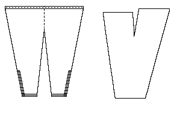

A "bog-find" that has been Radio Carbon dated to about 1000-1210 CE. These appear to be a draw-string design. The "trim" is woven into the material of the leg.
Go to Hose Page, or Skjoldehamn Site Page
Some Clothing of the Middle Ages -- Hose/Trousers -- Skjoldehamn, by I. Marc
Carlson, Copyright 1996, 1998. This code is given for the free exchange of
information, provided the Author's Name is included in all future revisions, and no money
change hands-